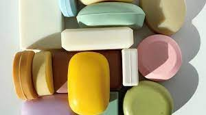

SABUN

Vücut ve saç temizliği için tercih edilen temizleyici ürünler arasında sabunlar da yer alır. Farklı içeriklere sahip sabun çeşitleri arasından cilt ya da saç ihtiyaçları özelinde seçim yapılması banyo rutininin etkili bir şekilde planlanmasına katkı sağlar. Sabun sadece vücut temizliği için kullanılan bir ürün değildir. Aynı zamanda el temizliği için de sabun kullanımı oldukça yaygın bir tercihtir. El yıkama, vücut temizliği, yüz temizliği gibi ihtiyaçlar özelinde sabun seçerken mutlaka sabun içeriğine bakılması, sabunun hangi kullanım amacına uygun üretildiğinin incelenmesi gerekir. Özellikle yüz temizliği için sabun tercih edenlerin mutlaka nemlendirici etkisi ile ön plana çıkan ve yüz temizliği özelinde formüle edilmiş ürünleri kullanmaları önerilir. Sıvı ya da kâğıt sabunların yüze teması çeşitli cilt sorunlarına neden olabilir.
ŞAMPUAN
Saç bakımındaki en önemli adımlardan birisi şampuan kullanımıdır. Saçın ve saç derisinin temizlenmesi için tercih edilen şampuan saç sağlığı açısından büyük öneme sahiptir. Her zaman saç tipine ve saç gereksinimlerine uygun şampuan tercihi yapılması, etkili bir saç bakım rutini oluşturmak için gereklilik olarak ön plana çıkar.
CİLT BAKIM ÜRÜNLERİ

Cilt temizleyici ürünler ciltteki makyajı, yağı, kiri, ölü cilt hücrelerini ve cildi olumsuz yönde etkileyebilecek diğer unsurları ciltten uzaklaştırmak için kullanılır. Ciltteki gözenekleri temiz tutmaya ve akne gibi cilt rahatsızlıklarını önlemeye yardımcı olan bir cilt bakım ürünüdür.
Cildin normal pH’ı 4.5 ila 6.5 arasında değişir. Cilt temizlendiğinde temizleyici, cildin nem bariyeri ve cildin pH’ı arasında bir etkileşim meydana gelir. Sabunlar cilt bariyerini zedeleyen ve cilt pH’ını artırarak kuruluk ve tahriş problemlerini artıran maddeler içerir. Sabun içermeyen jel, krem ve köpük temizleyiciler cilt bariyerinde daha az bozulmaya ve cilt pH’ında minimum değişikliğe neden olacak, nazik bir etki sağlayacak şekilde formüle edilirler.
Cildin temas ettiği çevresel kirlerin ve kozmetik ürünlerin çoğu suda çözünme özelliğine sahip değildir. Bu nedenle cildin suyla yıkanması, ciltten çıkarılmaları için yeterli değildir. İdeal olarak cilde zarar vermeden ya da ciltte tahrişe neden olmadan kir, sebum, yağ ve ölü cilt hücrelerinin temizlenmesi için temizleyiciler kullanılmalıdır.